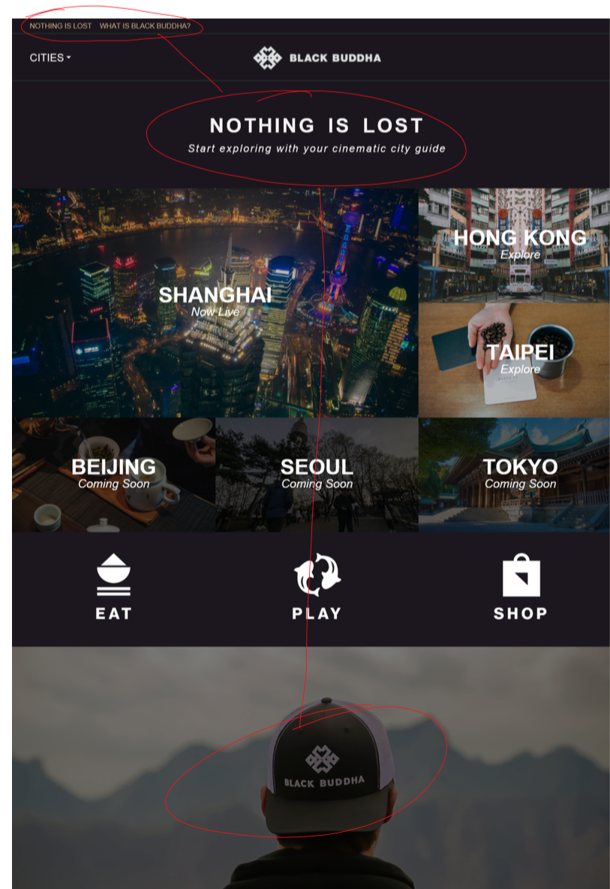
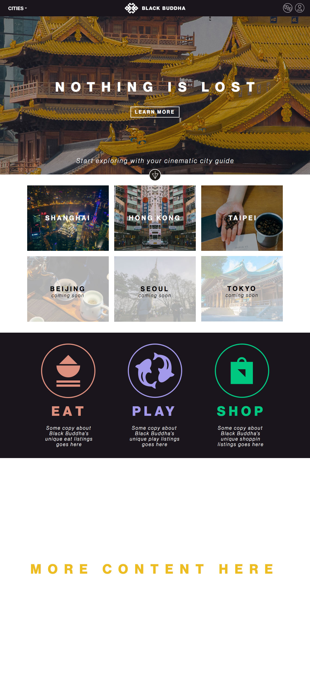

My Interpretation of the Challenge:
Design an everyday, affordable solution for public transit that is inspired by the simplicity and ease-of-use of Uber, that is used primarily locally but can also work for destinations beyond your metropolitan area.
Inspiration: Uber, Google Maps, Nextbus, Transporter
Why is Uber amazing?
Push a button and your own private ride is moments away from picking you up. By optimizing for the quickest use case (starting off on the previously used transport option and without a destination or fare estimate predetermined) you can be on your way quickly. If you’re more price sensitive, you can perform a fare estimate which will also provide you with extra functionality like shareable ETA.
What are the existing app solutions for public transit?
Google Maps does a good job, and always has, of providing static directions combining multiple public transit options for a given origin and destination. However, one gap in its experience is its reliance on *scheduled* transit times, and often does not tap into live transit times. Other apps like Transporter, and webapps like NextBus, provide live transit times, but for limited agencies. Google Maps directions are also pretty static - relying on the user to follow steps manually rather than “tracking you” and smartly telling you the next step, similar to turn-by-turn driving directions.
How might one design a public transit app that combines the best of Uber and public transit directions experiences?
The way I see it, friction in setting up a routing via public transport routing can be reduced vs. what Google Maps currently provides. Lessons learned from the elegance of Uber and the shortcomings of Google Maps can be applied in the following ways:
- Optimize for quickest use case (departing current location now) but provide for alternate cases (departing elsewhere and/or at a later time)
- Provide guided or semi-guided navigation tracking en route, ensuring the user has options in the event of missing steps
- Provide minimal options that are the best combination of price and schedule, versus overwhelming the user with many options

Solution Mockups
Updated Homepage see it simulated in your desktop browser
